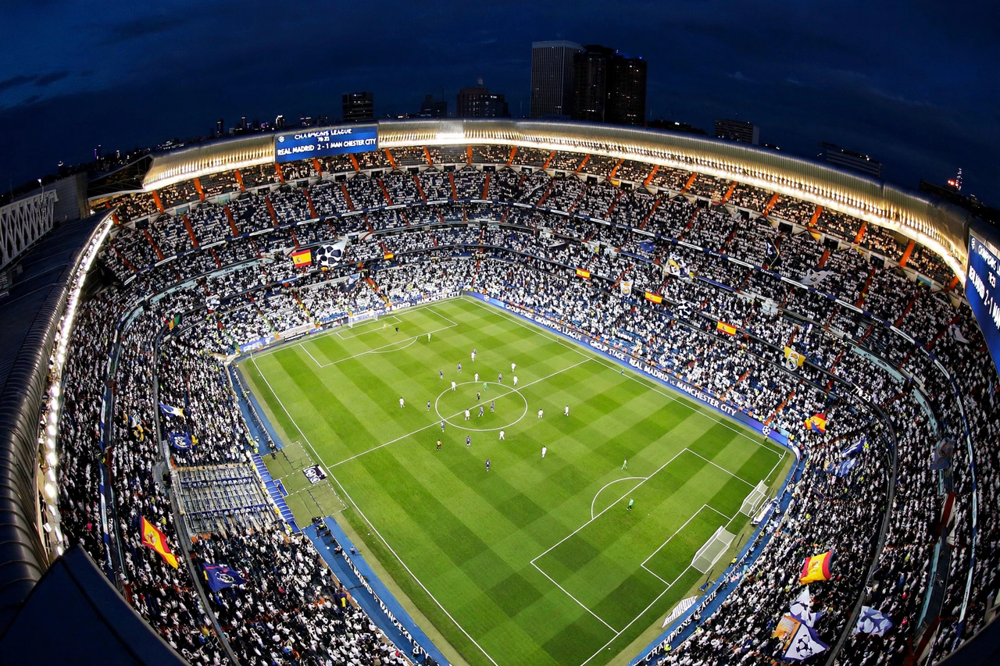

| Real Madrid Club de Fútbol | |
| Founded | 6 March 1902 (as Madrid Football Club) |
|---|---|
| Stadium | Santiago Bernabéu, Madrid (capacity ~84,000) |
| President | Florentino Pérez |
| League | La Liga |
| Nickname | Los Blancos (The Whites); Los Merengues; Los Vikingos |
| Honours (major) | 36 La Liga titles; 20 Copa del Rey; 15 European Cup/UEFA Champions League titles (record) |

Real Madrid Club de Fútbol, commonly known as Real Madrid, is a Spanish professional football club based in Madrid. Founded in 1902, it is widely regarded as one of the greatest and most successful clubs in world football. Unlike most European clubs, Real Madrid has been owned and operated by its members (socios) since its founding. The club is famous for its all-white kit, its record 15 European Cup/UEFA Champions League titles, and its rivalry with FC Barcelona, contested as El Clásico.
The club was founded as Madrid Football Club in 1902 and received the title Real ("Royal") from King Alfonso XIII in 1920. Under president Santiago Bernabéu, whose name the stadium bears, Madrid signed Alfredo Di Stéfano and dominated the new European Cup, winning the first five editions (1956–1960) with a team also featuring Ferenc Puskás and Francisco Gento. The 1960 final, a 7–3 win over Eintracht Frankfurt, is often cited as the greatest club performance of the era.
Further golden ages followed: the "Quinta del Buitre" generation of the 1980s; Champions League titles in 1998, 2000, and 2002 under the first Galácticos policy of president Florentino Pérez (signings such as Luís Figo, Zinedine Zidane, Ronaldo, and David Beckham); and a modern dynasty under Zidane as coach and later Carlo Ancelotti — three consecutive Champions Leagues (2016–2018) with Cristiano Ronaldo, and further titles in 2022 and 2024.
FIFA named Real Madrid the "Best Club of the 20th Century" in 2000. The club regularly tops revenue rankings in European football and is valued among the most valuable sports franchises in the world. Its other sections include a historically successful basketball team, Real Madrid Baloncesto. Madrid's principal rivals are Barcelona (El Clásico) and Atlético Madrid (the Madrid derby).